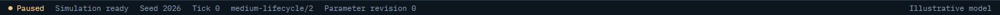
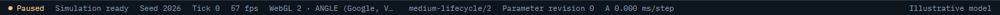
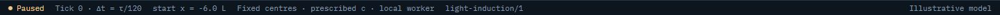
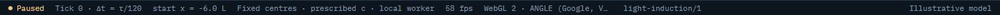
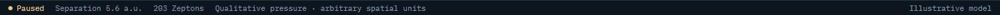
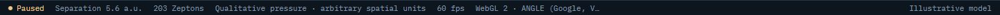

UI 19f: Debug telemetry: before and after
With Settings › Show debug telemetry on, every lab's status bar now starts with the frame rate and the browser's WebGL version and renderer (truncated; the full string is its tooltip). Medium adds A's worker ms/step beside B's. Off by default, so nothing changes for anyone who hasn't turned it on.
Real screens: "before" runs the layer below, and "after" runs this layer. Click an image to open it at full size. Regenerate with node scripts/compare-screens.mjs --before ../19e-link-validation --out docs/ui-previews/19f-debug-telemetry --set telemetry --title 'UI 19f: Debug telemetry' --description 'With Settings › Show debug telemetry on, every lab'\''s status bar now starts with the frame rate and the browser'\''s WebGL version and renderer (truncated; the full string is its tooltip). Medium adds A'\''s worker ms/step beside B'\''s. Off by default, so nothing changes for anyone who hasn'\''t turned it on.'.
Medium · status bar with debug telemetry




Light · status bar with debug telemetry




Casimir · status bar with debug telemetry (it had none)



